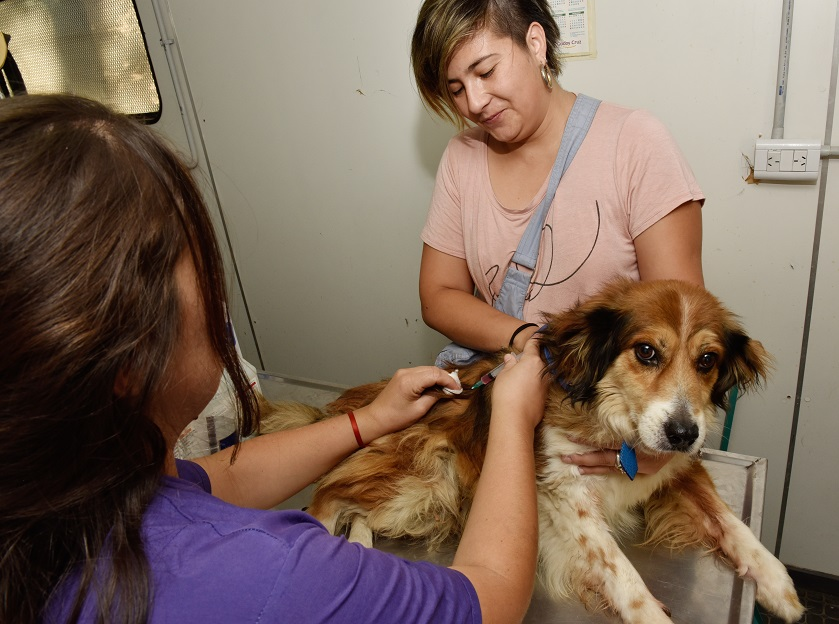
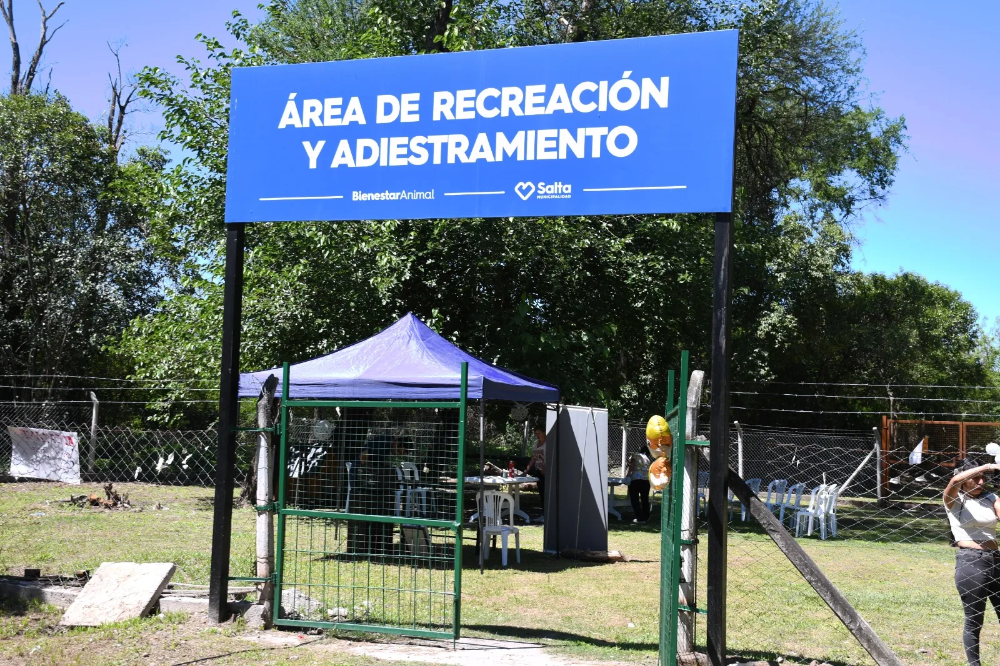

Nuestros proyectos a lo largo de este tiempo...
Cada acción realizada cambia la vida de un perro.
-

Jornadas de Adopción Urbana
Encuentros ambulantes en plazas de la ciudad donde las familias pueden conocer, interactuar y adoptar perros rescatados en un ambiente más alegre y al aire libre.
→ +120 perros encontraron hogar definitivo durante las ediciones del año 2025.
-

Programa de Adopción de Perros Adultos
Dedicada al rescate, atención veterinaria especializada y reubicación de perros de edad avanzada, asegurando que pasen sus últimos años rodeados de amor y tranquilidad.
→ Cobertura veterinaria al 100% y adopción prioritaria para más de 45 perros adultos.
-

Operativos de Castración y Vacunación
Campañas comunitarias de castración gratuita, vacunación y desparasitación en barrios vulnerables para promover la tenencia responsable y prevenir la sobrepoblación.
→ +1500 intervenciones gratuitas realizadas en conjunto con veterinarios y voluntarios aliados.
-

Rehabilitación y Conducta
Proyecto enfocado en la recuperación física y el adiestramiento basado en refuerzo positivo para perros rescatados de situaciones de maltrato o abandono extremo.
→ 95% de casos exitosos de reinserción en hogares definitivos tras completar el entrenamiento.